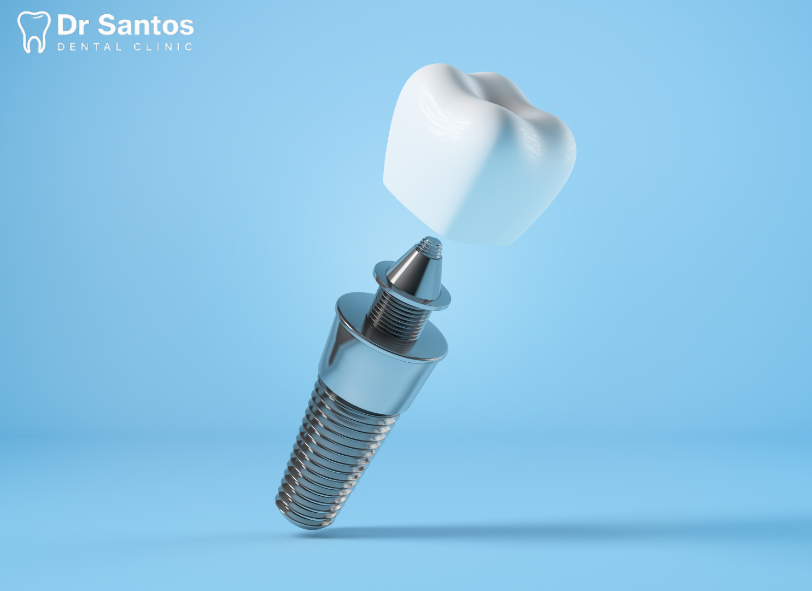
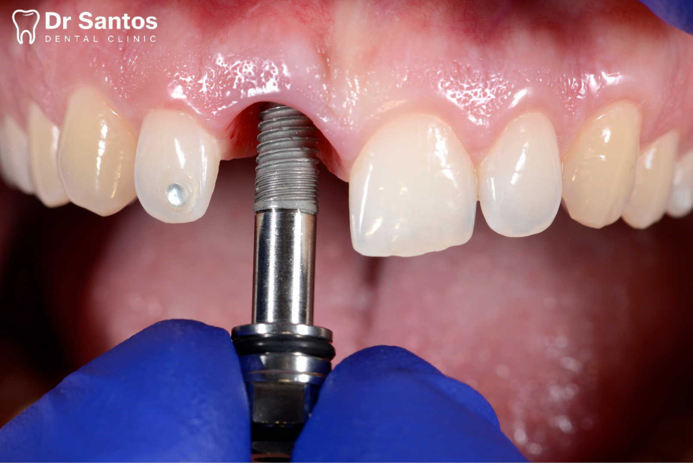

Implantes Dentales: La Solución Definitiva
¿Qué son los Implantes Dentales?
Un implante dental es un poste de titanio (un material biocompatible) que se coloca quirúrgicamente en el hueso maxilar, justo debajo de la encía. Funciona como una raíz artificial sobre la cual se pueden montar dientes de reemplazo (coronas) o puentes fijos.
A diferencia de las dentaduras postizas, los implantes son una solución fija que no se desliza ni se mueve, proporcionando una estabilidad y comodidad comparables a las de los dientes naturales.
Visualizando el Proceso y Resultado

Imagen solo para fines ilustrativos. No es un caso real.

Imagen solo para fines ilustrativos. No es un caso real.
Ventajas Clave de los Implantes
- Solución Permanente: Son la opción más duradera para reemplazar dientes perdidos.
- Preservación Ósea: Al integrarse con el hueso (osteointegración), evitan la pérdida ósea que ocurre cuando falta un diente.
- Funcionalidad Completa: Permiten masticar, hablar y sonreír con total normalidad y confianza.
- No Afectan a Otros Dientes: A diferencia de los puentes, no requieren tallar los dientes adyacentes sanos.
- Tasa de Éxito Elevada: Es uno de los procedimientos dentales con mayor tasa de éxito a largo plazo.
Fases del Tratamiento de Implantes
- Estudio y Diagnóstico: Se realiza un examen completo con radiografías y/o tomografía (CBCT) para evaluar la cantidad y calidad del hueso.
- Fase Quirúrgica: Se coloca el implante de titanio en el hueso maxilar mediante una intervención sencilla y con anestesia local.
- Osteointegración: Se espera un período de 3 a 6 meses para que el hueso crezca alrededor del implante, fijándolo de manera permanente.
- Fase Protésica: Se toma una impresión para diseñar la corona a medida, que luego se atornilla o cementa sobre el implante.
- Mantenimiento: Se requiere la misma higiene que un diente natural y visitas periódicas para asegurar su longevidad.
¿Eres Candidato para un Implante Dental?
Recupera la pieza dental que te falta con la mejor tecnología. Agenda una consulta para una valoración completa y sin compromiso.
Agenda tu cita